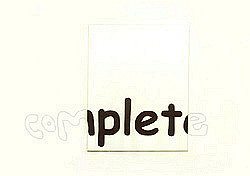

|  |  |  |  |  |
|
 click here to view larger image Another work using the atelier wall: Slip Book cover using similar concept: gnit |
 |
Incomplete acrylic paint, cotton canvas 40 x 50 cm 2001 The "plet" is painted on the canvas and the "com" and the "e" are written on the wall with pencil. Originally the "com" and "e" were also painted on the wall in the same color and font. But I left it up on the wall for too long and one of my colleagues painted over them. This piece was shown in Rotterdam's Galerie De Aanschouw in 2002. |